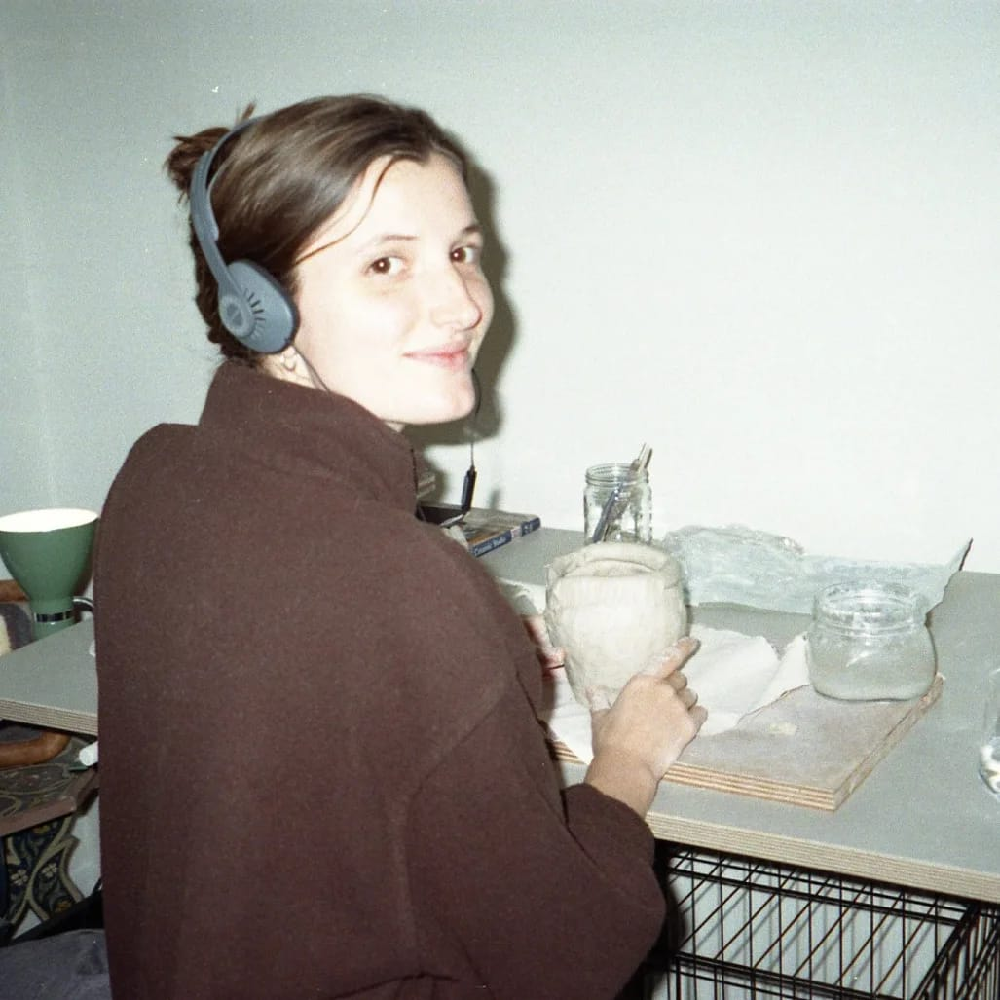

Postdoctoral Associate at Stony Brook University
I am a researcher interested in language and other aspects of human culture. I use an evolutionary approach, studying how culture develops in relation to the social environment in which it is situated. I use a variety of methods in my research: experiments with participants, data analysis and agent-based modeling. I believe that by understanding the context in which a culture develops we will be more empathetic and appreciative of cultural diversity across the world.
Some examples of research questions I study are:
I am currently a postdoctoral associate at the Institute for Advanced Computational Science at Stony Brook University (USA) with Margaret Schedel and Mason Youngblood. Prior to this, I was a postdoctoral fellow at the University of Birmingham (UK) as part of the SignMorph project with Adam Schembri. Before that, I was a postdoctoral researcher at the Institute for Logic, Language and Computation at the University of Amsterdam (NL) with Marieke Schouwstra. I did my PhD at the AI lab of the Vrije Universiteit Brussel (BE) with Bart de Boer, Connie de Vos and Hannah Lutzenberger. If you'd like to read it, you can find it here.
I am also a ceramicist. More on that here.
Mudd, K., & Schouwstra, M. (2024). Shared context and lexical alignment: an experimental investigation. In L. K. Samuelson, S. L. Frank, A. Mackey, & E. Hazeltine (Eds.), Proceedings of the 46th Annual Meeting of the Cognitive Science Society (CogSci 2024)
Lutzenberger, H., Mudd, K., Stamp, R., & Schembri, A. (2023). The social structure of signing communities and lexical variation: A cross-linguistic comparison of three unrelated sign languages. Glossa: A journal of general linguistics, 8(1), 1-40. https://doi.org/10.16995/glossa.10229
Mudd, K., de Vos, C. & de Boer, B. (2021). Shared context facilitates lexical variation in sign language emergence. Languages. 7(1), 31. https://doi.org/10.3390/languages7010031
Mudd, K., de Vos, C. & de Boer, B. (2020). The effect of cultural transmission on shared sign language persistence. Palgrave Communications. 6. https://doi.org/10.1057/s41599-020-0479-3